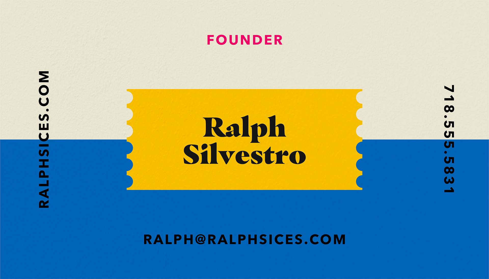
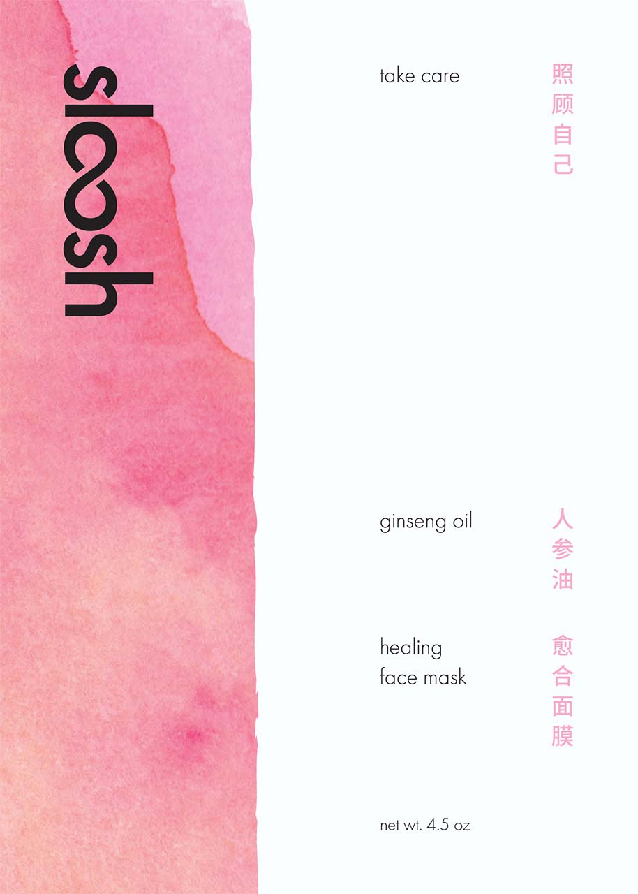
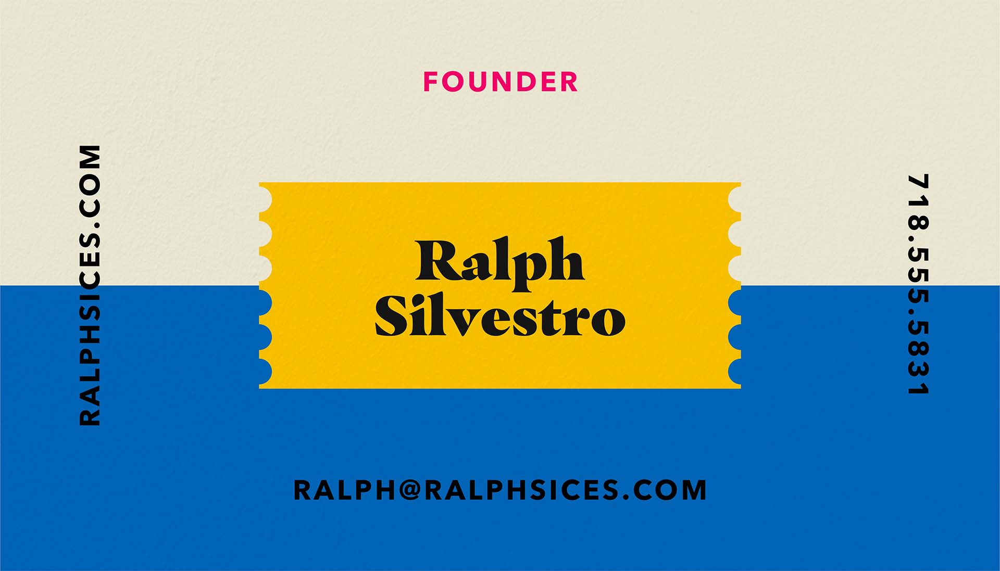
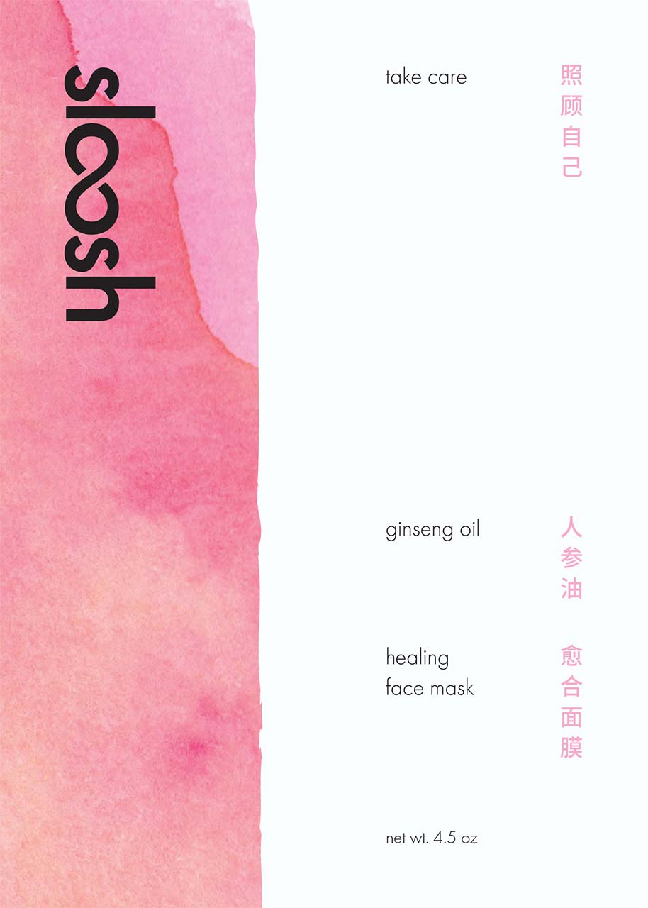

Hi! My name is Justin Valdez.
I'm a brand designer,

Hi! My name is Justin Valdez.
 Ralph's Italian Ices

Sloosh Skincare

Self-Destruct Symposium
Ralph's Italian Ices

Sloosh Skincare

Self-Destruct Symposium
 ChapStick Advertisements
ChapStick Advertisements

Justin Valdez is a 20 year old Graphic Designer with a focus on branding, web development, and typography. Justin is a current Graphic Design student at the Fashion Institute of Technology. He recently graduated with an Associate's Degree in Communication Design in May 2021. Prior to FIT, Justin has interned at several small design agencies, producing effective visual solutions for local clientele. 
As of late, Justin has just finished working on a rebrand of FIT, developing triptych's for a fictitious symposium, and creating a typographic identity for a classmate. In his free time, Justin can be found beside an L-Desk in the corner of his room, playing video games, creating music, or conversing with friends.
Education
Fashion Institute of Technology
Graphic Design BFA, Communication Design AAS
Sep 2019 – May 2023
Social Media